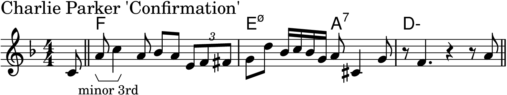
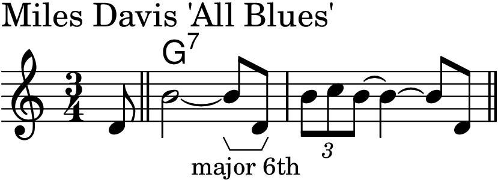
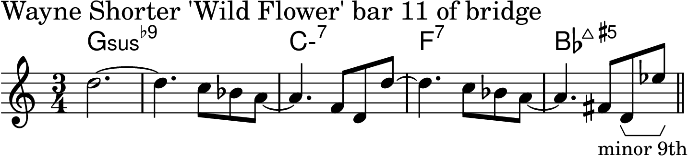
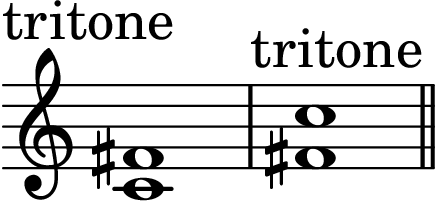
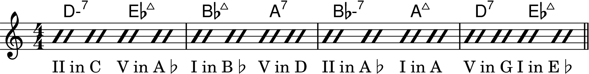
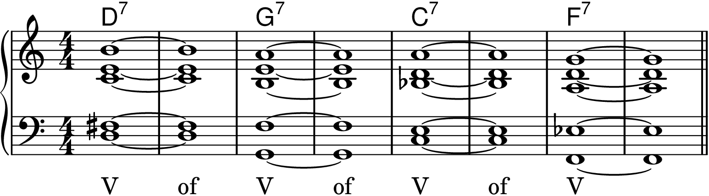
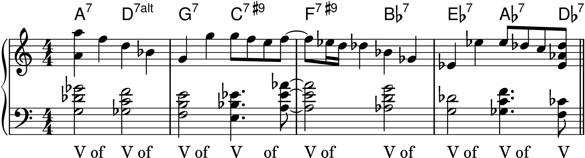
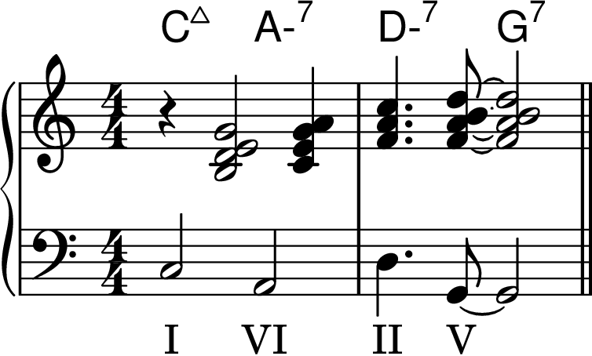
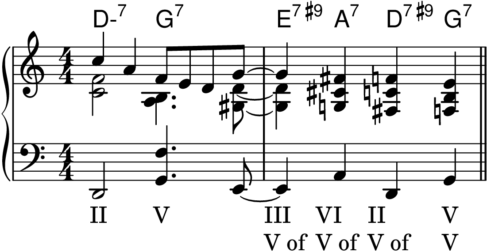

The Jazz Theory Book by Mark Levine
Chapter 1: Basic Theory
Figure 1-1

Table of Intervals
Ascending minor 2nd

Descending minor 2nd

Ascending major 2nd

Descending major 2nd

Ascending minor 3rd

Descending minor 3rd

Ascending major 3rd
Descending major 3rd

Ascending perfect 4th

Descending perfect 4th

Ascending tritone

Descending tritone

Ascending perfect 5th

Descending perfect 5th

Ascending minor 6th

Descending minor 6th
Ascending major 6th

Descending major 6th

Ascending minor 7th

Descending minor 7th

Ascending major 7th

Descending major 7th

Ascending octave

Descending octave

Ascending minor 9th

Descending minor 9th

Ascending major 9th

Ascending major 10th

Descending 11th

Descending major 13th

Figure 1-2

Figure 1-3

Figure 1-4

Figure 1-5

Figure 1-6

Figure 1-7
Chapter 2: The Major Scale and the II-V-I Progression
Figure 2-1

Figure 2-2

Figure 2-3

Figure 2-4

Figure 2-5
Figure 2-6

Figure 2-7
Figure 2-8

Figure 2-9

Figure 2-10

Figure 2-11

Figure 2-12

Figure 2-13

Figure 2-14

Figure 2-15

Figure 2-16

Figure 2-17

Figure 2-18

Figure 2-19

Figure 2-21

Figure 2-22

Figure 2-23

Figure 2-24

Figure 2-25

Figure 2-26

Figure 2-27
Figure 2-28

Figure 2-29

Figure 2-30

Figure 2-31

Chapter 3: Chord/Scale Theory
Figure 3-142

Figure 3-143